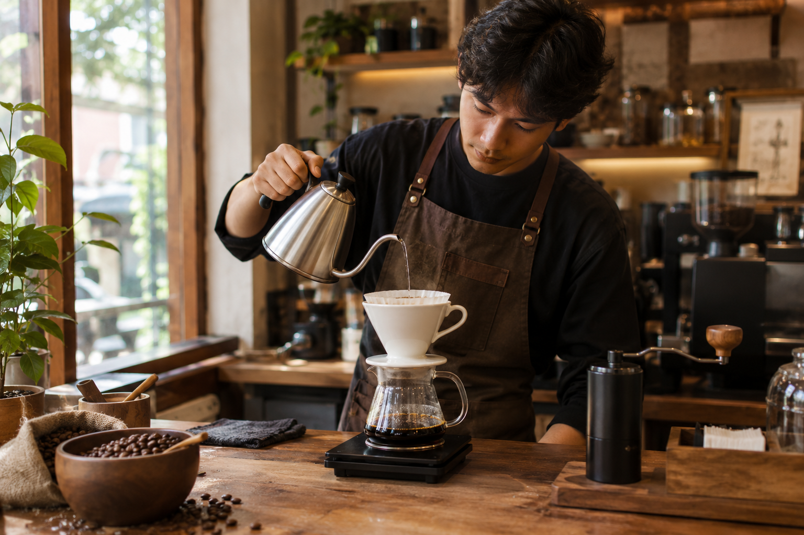
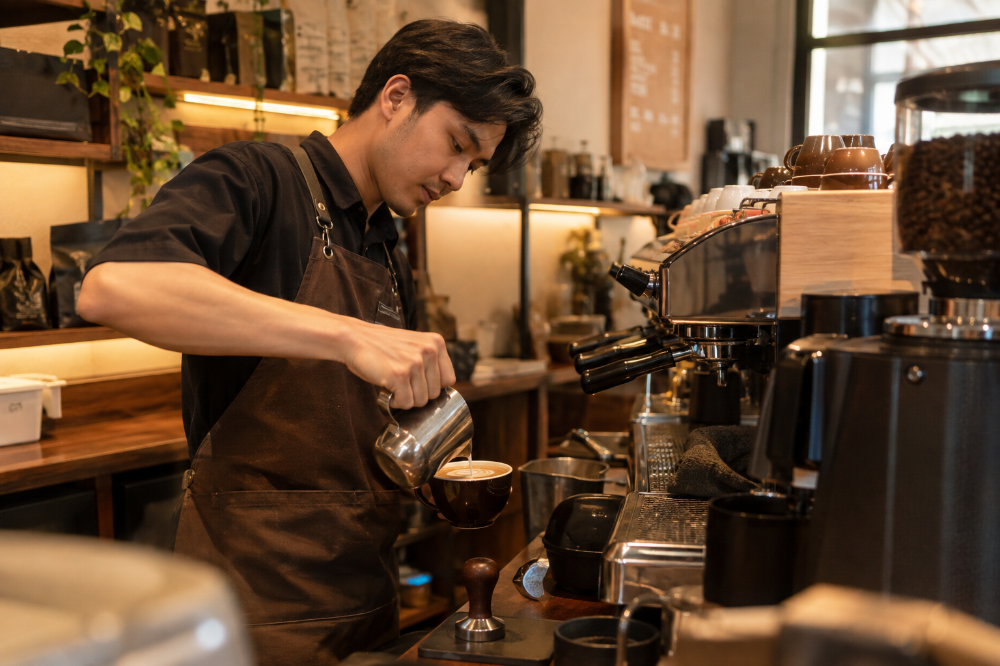
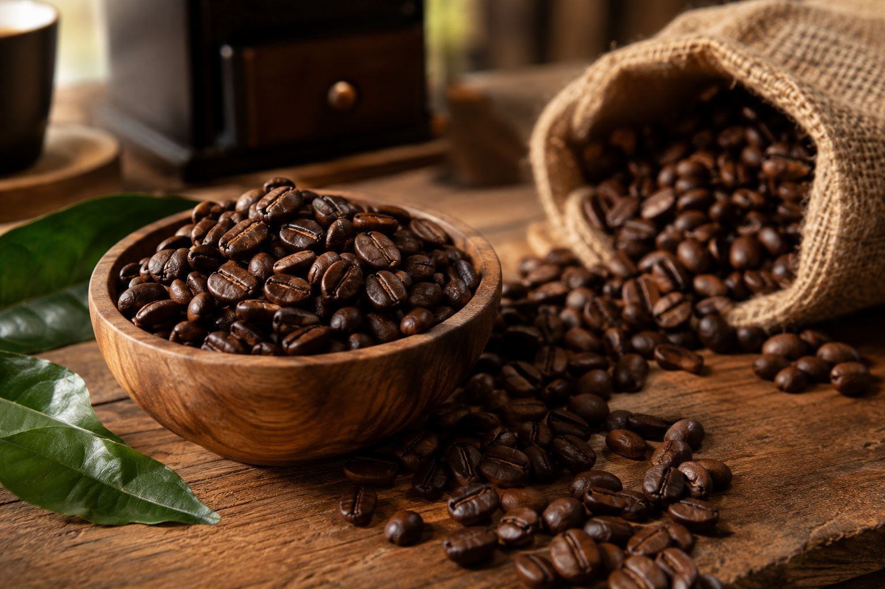
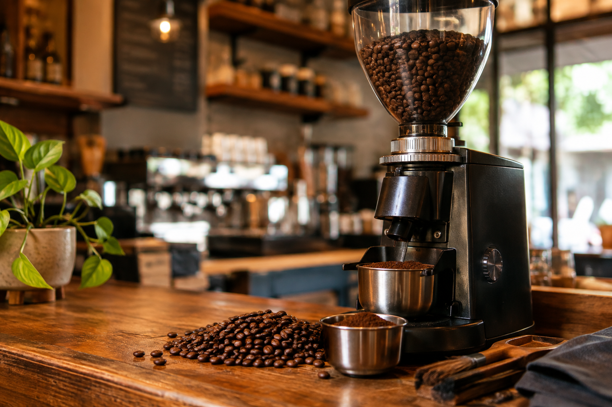

MOMEN KOPI NUSANTARA
Galeri Kopi Nusantara
Jelajahi cerita di balik setiap sajian Kopi Nusantara, dari suasana kedai hingga proses kopi disiapkan dengan penuh ketelitian.

Potret Kopi Nusantara
Beberapa foto suasana dan kegiatan di Kopi Nusantara.
Suasana Kedai
Tempat yang nyaman untuk menikmati kopi dan menghabiskan waktu.

Proses Pembuatan Kopi
Proses penyeduhan kopi sebelum disajikan kepada pelanggan.
Aktivitas Kopi Nusantara
Beberapa kegiatan yang menjadi bagian dari aktivitas di kedai.

Barista Kopi Nusantara
Barista menyiapkan minuman dengan memperhatikan kualitas penyajian.

Etalase Kopi
Berbagai pilihan produk Kopi Nusantara yang tersedia untuk pelanggan.
Detail Kopi
Melihat lebih dekat bahan dan peralatan yang digunakan dalam proses pembuatan kopi.

Biji Kopi
Biji kopi menjadi bahan utama dalam menghasilkan cita rasa.

Penggiling Kopi
Peralatan yang digunakan untuk mempersiapkan bubuk kopi.
Secangkir Rasa - Kopi Nusantara
Dengarkan lagu sambil bersantai dengan secangkir kopi.